第 1 章——执行摘要
机器人技能协议（RSP）v0.3
1.1 机器人软件的结构问题过去十年，机器人技术在硬件、传感器和人工智能模型方面取得了显着进步。工业机械手变得更加精确且价格实惠；移动机器人已经从研究原型发展成为已部署的产品；基础模型正在迅速扩展到感知、语言和行动领域。
然而尽管有这些进步，机器人软件未能扩展。
如今，大多数机器人功能仍然以以下形式提供：
- 项目特定的集成代码
- 机器人供应商锁定的 SDK 实现
- 一次性 ROS 图与硬件紧密耦合
因此，部署相同的能力例如，不同机器人、工厂或客户之间的“垃圾箱拣选”、“移动对接”或“视觉检查”反复需要新的工程工作。知识不会在生态系统层面积累；它仍然被困在各个项目中。
这不是工具问题。 它是一个缺少抽象问题。
1.2 为什么现有的抽象还不够
ROS 等机器人中间件提供了出色的通信原语（主题、服务和操作），但这些原语在扩展机器人软件时在错误的抽象级别上运行：
- 他们定义组件如何通信， 不是提供什么能力
- 它们缺乏明确的语义契约、安全信封和生命周期管理
- 它们的设计目的不是便于携带、可发现或可交易
因此，机器人软件仍然存在以项目为中心而不是以能力为中心。
相比之下，现代软件生态系统通过提升更高级别的抽象来扩展：
- 功能 → 服务
- 服务 → 产品
- 产品 → 市场
机器人技术尚未完成这一转变。
1.3 核心见解：技能是第一流资产
人类操作员、系统集成商和客户不会考虑 ROS 节点或控制循环。 他们认为技能:
- 选择一个对象
- 导航至某个位置
- 检查表面
- 组装一个组件
一个机器人技能代表一种有限的、有意义的能力：
- 意图明确
- 定义的输入和输出
- 可衡量的成果
- 安全限制
机器人技能协议（RSP）背后的核心见解简单而深刻：
如果技能成为一流、可移植且可验证的资产，机器人软件最终可以扩展。
1.4 从以机器人为中心的代码到技能经济
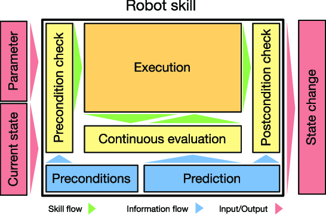
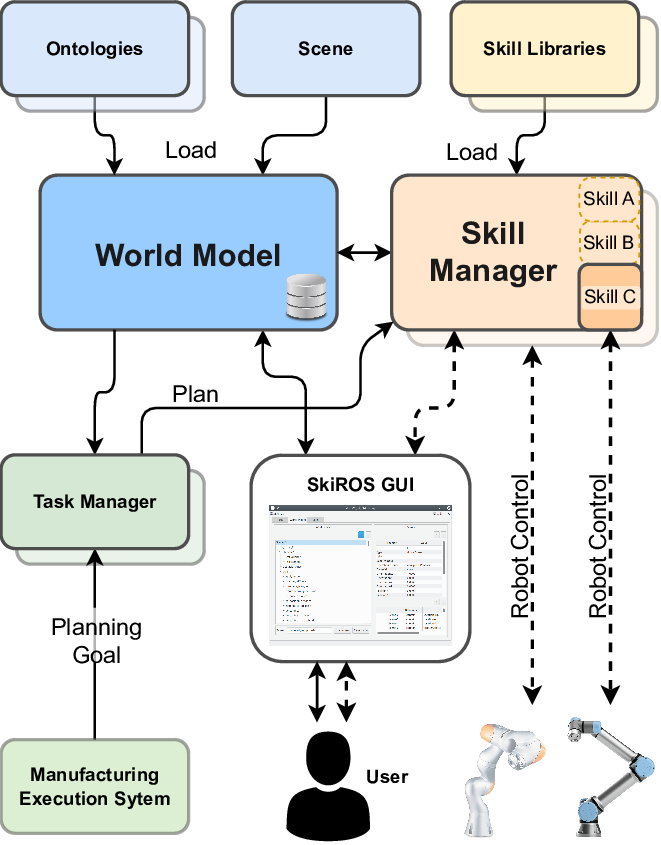
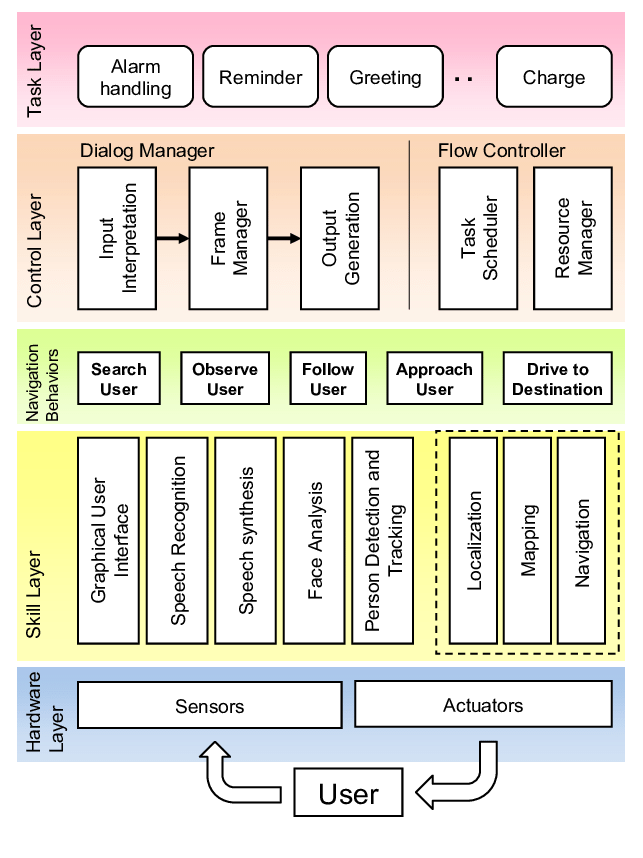
图 1-1从以机器人为中心的代码到技能经济
这个数字传达了什么
- 左边: 每个机器人平台都嵌入了自己的机器人特定代码。功能是重复的并且与硬件紧密耦合。
- 中间: 一个共享的技能层抽象机器人特定的细节并公开可重用的功能。
- 正确的: 技能通过以下方式发布、发现和重用：技能商店，实现跨机器人部署。
这种转变反映了云计算如何从特定于机器的脚本演变为可重用的服务和 API。
1.5 代理*技能范式
RSP v0.3 的核心是严格的关注点分离：
- 代理商决定该怎么办
- 技能定义它是如何完成的
代理从不直接控制电机、调整控制器或管理安全范围。相反，他们纯粹在技能领域运作。
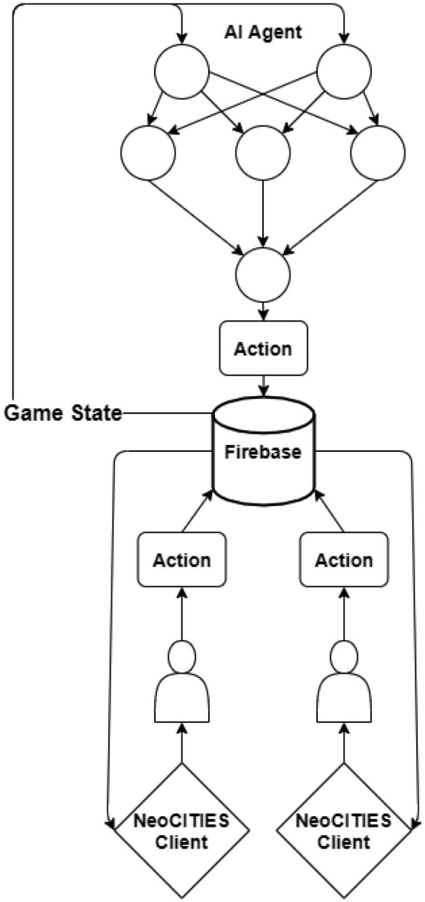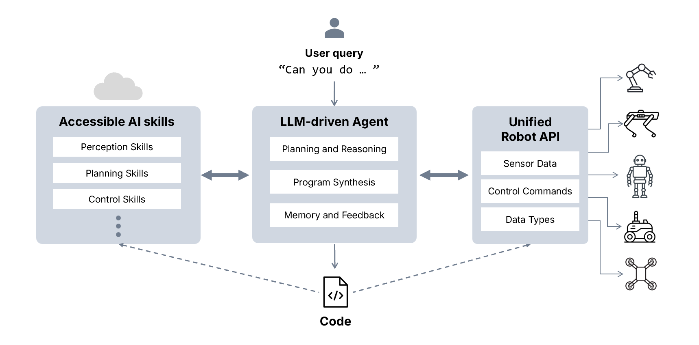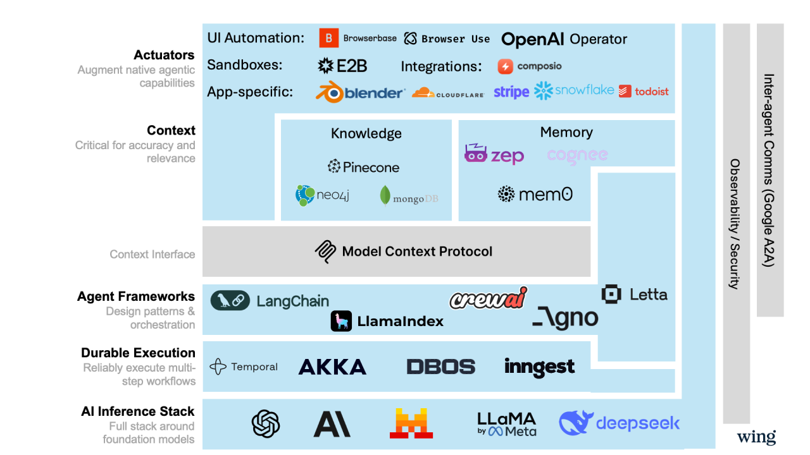图 1-2代理*技能交互模型
图中的关键信息
- 代理在任务和计划级别进行推理
- 技能封装了执行逻辑和安全性
- 技能运行时是物理机器人唯一可信的边界
这特工*技能模型允许智能（LLM、规划器、VLA 模型）独立于硬件和控制堆栈而发展。
1.6 机器人技能协议 (RSP) v0.3 定义了什么
Robot Skill Protocol v0.3 不是框架、SDK 或机器人操作系统。 它是一个协议级规范定义：
- 如何描述技能– 通过机器可读的清单和正式合同
- 如何发现和匹配技能– 基于能力概况、约束和信任要求
- 如何调用和执行技能– 通过独立于传输或中间件的标准化语义
- 如何加强安全和信任– 作为协议原语，而不是应用程序附加组件
- 技能如何随着时间的推移而发展– 版本控制、评估和弃用
1.7 为什么选择 RSP v0.3，以及为什么现在
几个行业趋势的融合使得 RSP 变得必要且及时：
- 代理人工智能系统正在变得能够进行高级推理，但缺乏安全的执行接口
- 仿真平台实现机器人行为的大规模验证和基准测试
- 机器人市场正在转向长尾、特定于应用程序的部署
- 开发商和中小企业需要可重用的构建块而不是定制集成
RSP v0.3 吸收了早期迭代的经验教训：
- 明确安全和能力限制
- 拥抱代理原生编排
- 从第一天起就为市场和生态系统的发展而设计
1.8 长期愿景
RSP 的最终愿景不仅仅是更好的机器人软件工具。
它的出现是一个全球机器人技能经济， 在哪里：
- 功能开发一次，随处部署
- 机器人、供应商和行业共享创新
- 机器人技术从以硬件为中心的交付过渡到以能力为中心的价值创造
RSP v0.3 建立了实现这一愿景所需的基础合同。
第 2 章 — 背景和问题定义
机器人技能协议（RSP）v0.3
2.1 机器人软件尚未规模化
尽管机器人硬件、传感器和人工智能模型不断取得进步，但机器人软件基本上仍然以项目为中心。每个部署通常被设计为定制系统，与特定的机器人配置、环境和客户要求紧密结合。
即使两个项目共享相似的功能目标（例如垃圾箱拣选或移动导航），底层软件也经常被重写或大量修改。知识不会在部署过程中积累；相反，集成成本会随着每个新项目而重置。
这种结构上的低效率是机器人技术扩展缓慢的根本原因。
2.2 机器人堆栈的碎片化
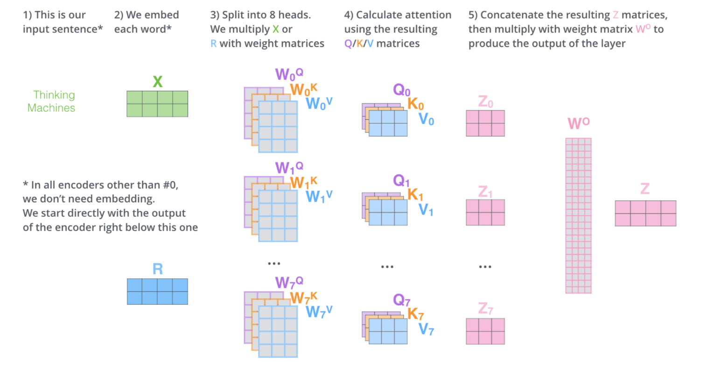
图 2-1机器人软件堆栈的碎片化
碎片同时存在于：
- 机器人厂商及硬件平台
- 软件中间件和SDK
- 功能层（感知、规划、控制、集成）
相同的功能在不同的孤岛中反复重新实现，使得重用成为例外而不是常态。
2.3 为什么现有的API和中间件不足
ROS等中间件提供了通信原语，但没有定义：
- 能力的语义含义
- 安全信封
- 生命周期管理
- 信任和验证信号
API 公开如何调用函数， 不是正在提供什么能力。 因此，它们无法支持自动发现、安全代理驱动执行或生态系统级重用。
2.4 以项目为中心与以能力为中心的机器人
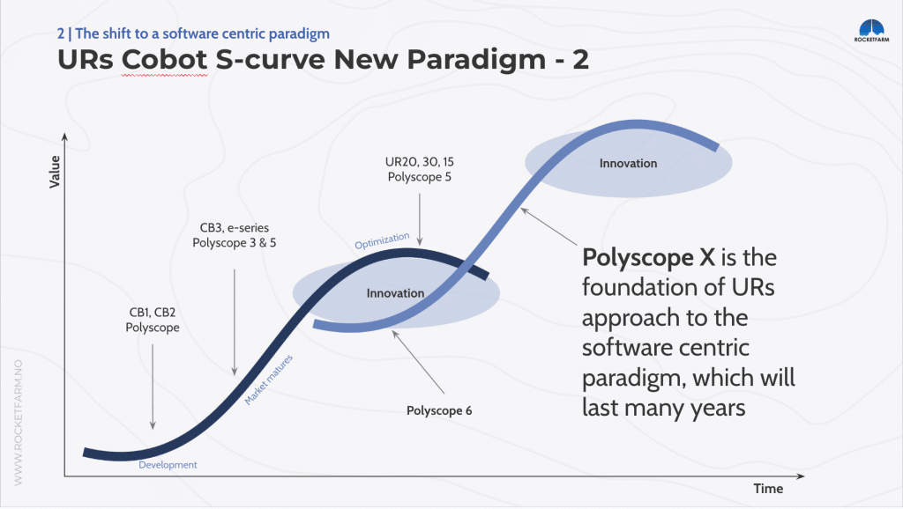
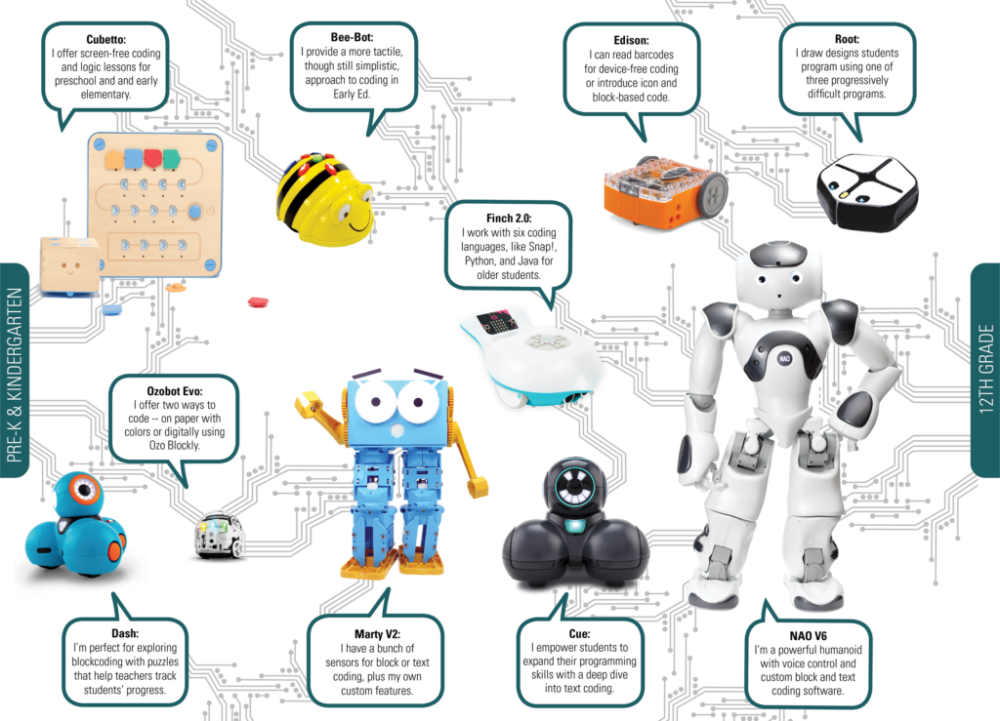
图 2-2以项目为中心与以能力为中心的机器人
在以项目为中心的模型中：
- 软件价值被困在项目中
- 扩展需要相应的工程努力
在以能力为中心的模型中：
- 技能是可重用的资产
- 跨部署的价值复合
RSP 的设计明确是为了实现后者。
2.5 问题陈述
机器人技术缺乏可重复使用的机器人功能的标准化、安全且可移植的抽象。
如果没有这样的抽象：
- 代理人工智能无法安全扩展
- 生态系统无法形成
- 经济杠杆仍然有限
第 3 章 — 设计原则
机器人技能协议（RSP）v0.3
3.1 作为架构约束的原则
RSP 不是功能的集合——它是一个受以下因素约束的系统明确的设计原则。这些原则决定了 RSP 的内容必须做，同样重要的是，它做什么不能做。
3.2 核心设计原则
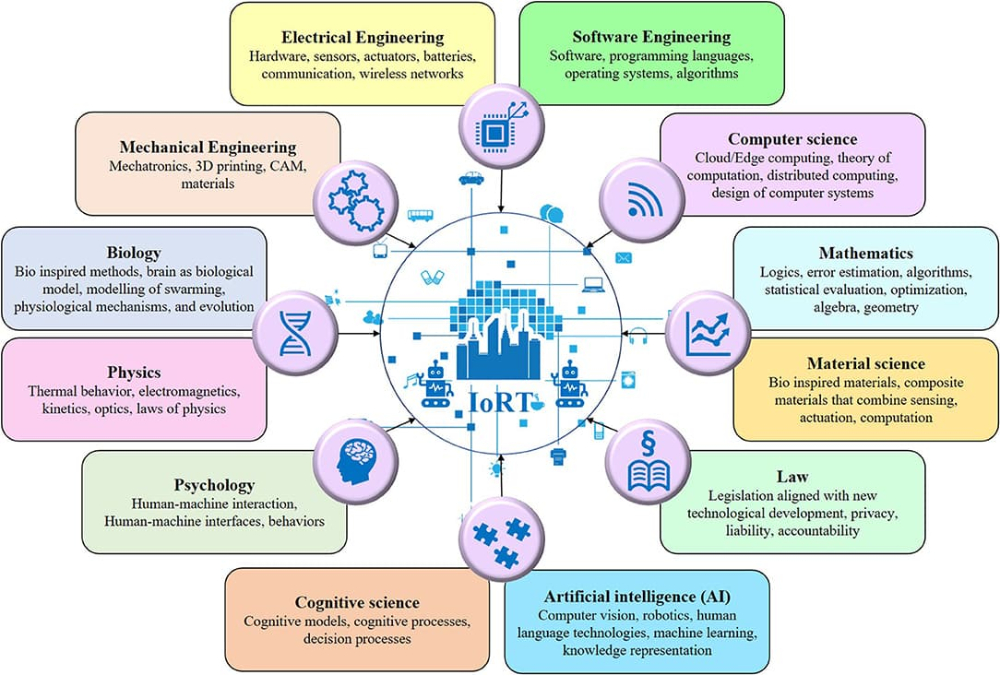
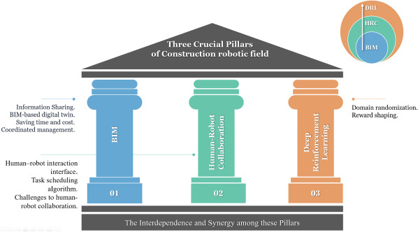
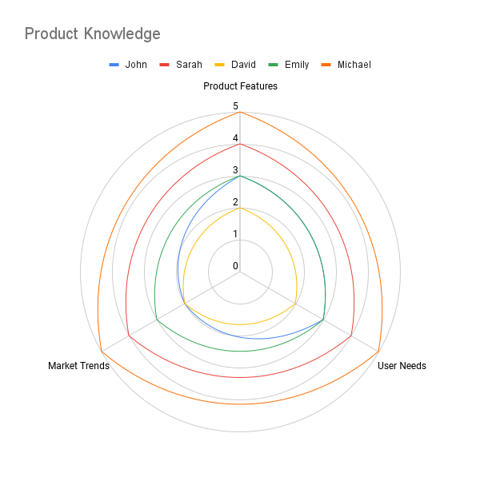
图 3-1 RSP设计原则
核心原则是：
- 技能优先的抽象
- 代理原生设计
- 能力约束执行
- 安全设计
- 模型和实现不可知论
- 云-边-机器人协同设计
这些原则是所有协议决策的硬性约束。
3.3 代理-执行分离
代理商决定什么去做。 技能定义如何它是安全执行的。
这种分离可以防止：
- 特工因直接影响硬件而产生幻觉
- 安全逻辑避免不一致的重复
3.4 RSP 有意未定义的内容
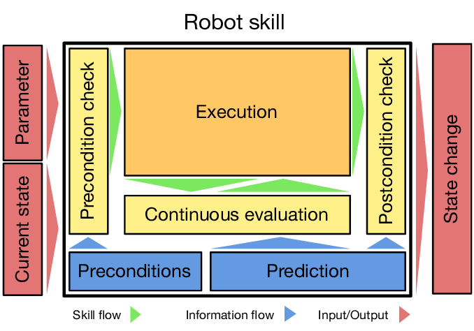
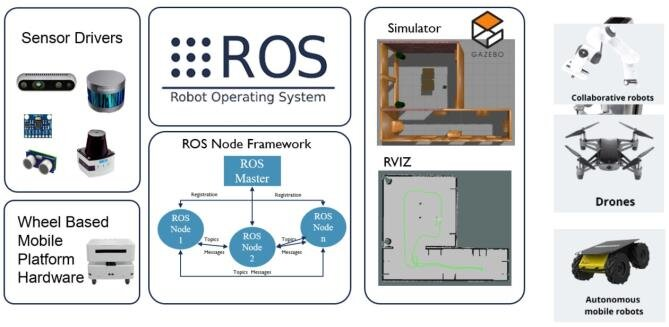
图 3-2 RSP 的范围边界
RSP故意这样做不是定义：
- 规划算法
- 控制策略
- 世界模型表示
- 机器学习架构
通过限制范围，RSP 保持稳定，而周围技术不断发展。
3.5 极简主义和正交性
RSP 定义了一组最小的正交概念。每个概念都有单一的职责，减少耦合并实现系统层的独立演进。
第 4 章 — 核心概念和术语
机器人技能协议（RSP）v0.3
4.1 为什么精确的概念很重要
机器人技术碎片化的根本原因之一是术语歧义。
术语如行为,能力,行动,技能， 和任务通常在团队、供应商和框架之间互换使用。这种模糊性导致：
- 系统边界不清晰，
- 接口不一致，
- 以及无法扩展的脆弱集成。
因此，RSP v0.3 定义了最小的、明确的本体论。 每个概念都有：
- 明确的责任，
- 严格的界限，
- 以及与其他概念的明确关系。
这些定义是规范的在 RSP 范围内。
4.2 技能
定义
一个技能是一个有界、可执行的机器人能力那：
- 执行特定类别的物理或网络物理操作，
- 公开一个正式的接口，
- 在强制执行安全和策略的运行时下执行。
一个技能是不是:
- 原始控制循环，
- 中间件节点，
- 或代理生成的动作序列。
技能的属性
- 意图限制: 表示提供什么能力，而不是任意行为。
- 可重复使用的：可以在具有兼容功能的机器人之间执行。
- 可检查：公开输入、输出、约束和遥测。
- 可治理：版本化、验证和策略控制。
技能是原子执行单元的RSP。
4.3 代理
定义
一个代理人是一个推理实体，负责：
- 解释目标和背景，
- 将任务分解为技能，
- 选择、排序和参数化技能，
- 对结果和失败做出反应。
代理可以使用以下方式实现：
- 法学硕士，
- VLA 型号，
- 象征性的规划者，
- 或混合系统。
明确的限制
在RSP中：
禁止代理直接控制机器人执行器。
他们只能通过 RSP 界面调用技能。 此限制是结构性的，而不是建议性的。
4.4 智能体-技能边界
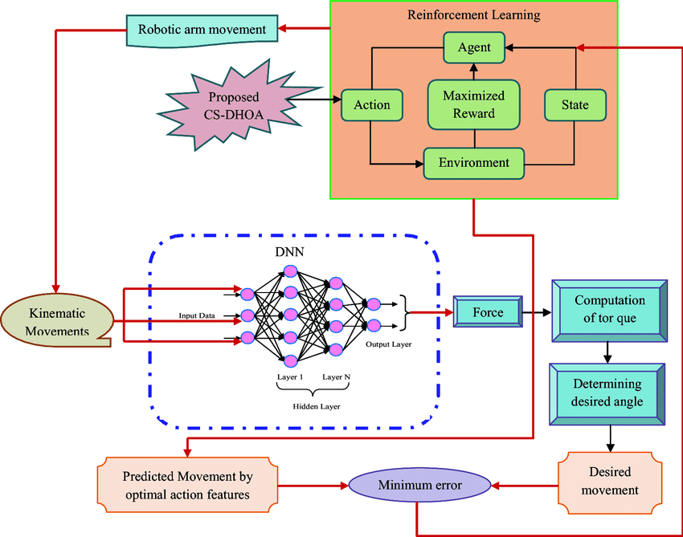
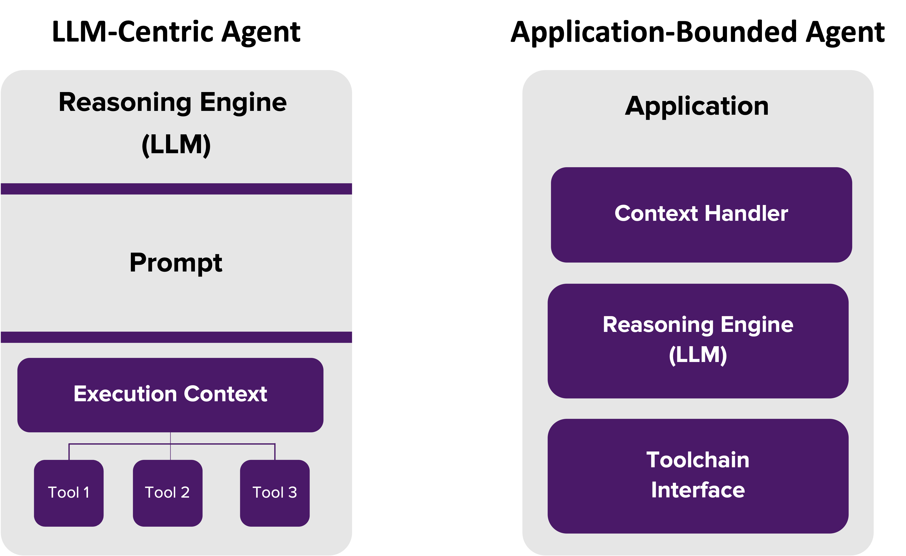
图 4-1代理-技能边界
这个边界是最重要的一个概念在RSP中。
- 边界以上：
- 推理、计划、不确定性、学习。
- 边界以下：
- 确定性执行、安全执行、硬件限制。
好处：
- 代理创新不会损害人身安全。
- 执行仍然是可预测和可审计的。
- 系统职责被清晰地分开。
4.5 技能清单
定义
一个技能清单是规范的、声明性的描述的一项技能。
它定义：
- 技能身份和版本，
- 所需的机器人能力，
- 输入/输出模式，
- 执行模式，
- 安全约束和不变量，
- 信任和验证工件。
清单是：
- 机器可读，
- 与传输无关，
- 以及工具、运行时执行和存储索引的单一事实来源。
4.6 能力概况
定义
一个能力简介描述了机器人（或模拟器）可以安全支持的内容。
它可能包括：
- 运动结构和范围，
- 有效载荷限制，
- 传感器和感知方式，
- 计算和运行时功能，
- 认证和安全评级。
能力配置文件启用自动兼容性检查技能执行前。
4.7 技能运行时间
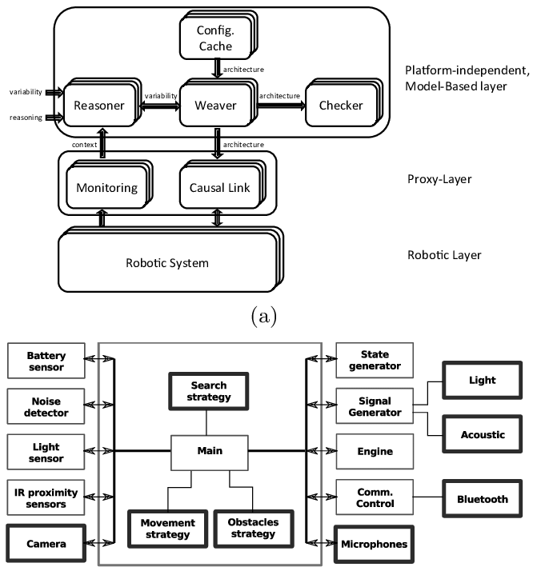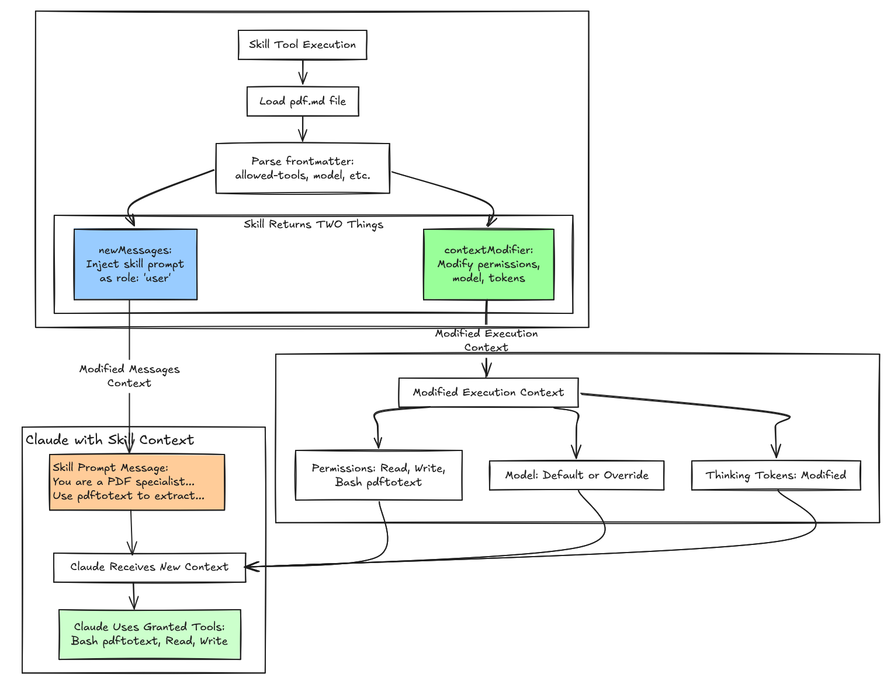
图 4-2技能运行时职责
一个技能运行时是可信执行环境：
- 验证先决条件，
- 在执行过程中强制执行约束和不变量，
- 调解对机器人硬件和中间件的访问，
- 发出结构化遥测和事件。
运行时间是非可绕过。 它是执行安全的最终权力。
4.8 技能合同
定义
一个技能合同正式化执行保证和假设。
它包括：
- 前提条件执行开始前必须满足的条件。
- 后置条件成功完成后提供保证。
- 不变量在整个执行过程中必须保持的条件。
合约可以：
- 静态验证，
- 运行时强制执行，
- 和可靠的技能构成。
4.9 任务（非规范）
在 RSP 中，任务是更高层次的目标或目的。 任务是：
- 由代理人解释，
- 分解为技能，
- 不是执行协议本身的一部分。
这种区别可以防止协议复杂性上升到目标语义。
4.10 关系概述
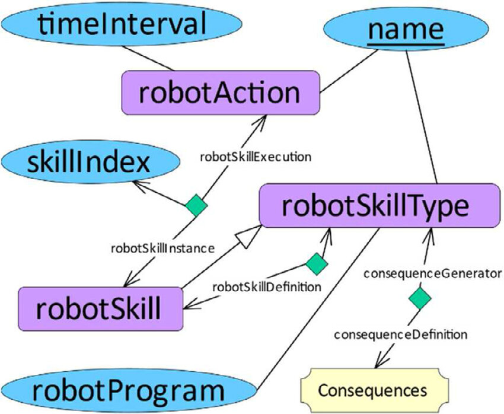
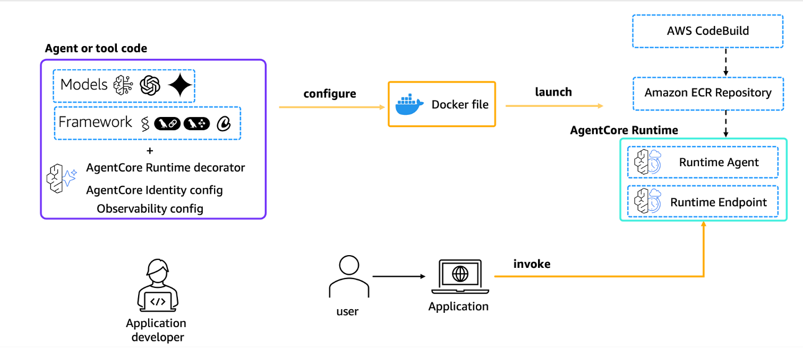
图 4-3核心概念和关系
- 代理人推理和计划。
- 技能定义了可执行的能力。
- 清单声明接口和约束。
- 功能配置文件门兼容性。
- 运行时增强安全性和执行力。
- 机器人和模拟器仍然低于协议边界。
4.11 RSP 有意做什么不是定义
为了保持灵活性，RSP 这样做不是定义：
- 内功算法，
- 代理规划策略，
- 世界模型表示，
- 学习方法。
这些仍然是创新空间。
第 5 章 — RSP 架构概述
机器人技能协议（RSP）v0.3
5.1 架构目标
机器人技能协议 (RSP) v0.3 的架构旨在满足五个不可协商的目标：
- 严格的代理与执行分离代理绝不能直接控制硬件。
- 以技能为中心的执行边界所有机器人的动作都必须通过技能来调节。
- 安全是建筑的首要考虑因素安全必须从结构上而非程序上加强。
- 与现有机器人堆栈的兼容性RSP 必须与 ROS2、MoveIt、Nav2、Isaac 和专有系统共存。
- 生态系统可扩展性该架构必须支持市场、版本控制和多供应商部署。
这些目标自然会导致分层参考架构，而不是一个单一的框架。
5.2 四层RSP架构
 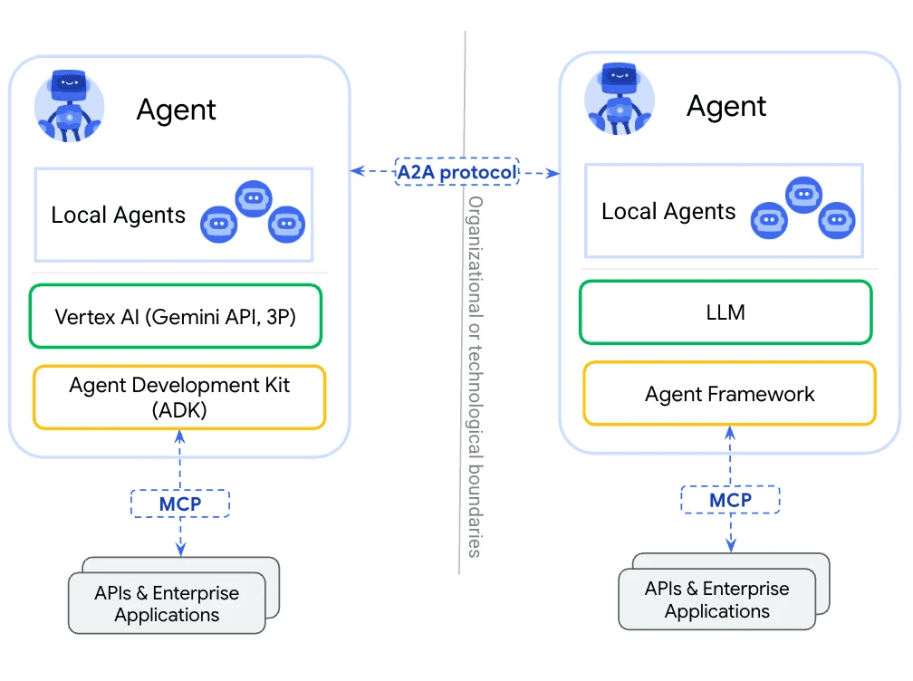
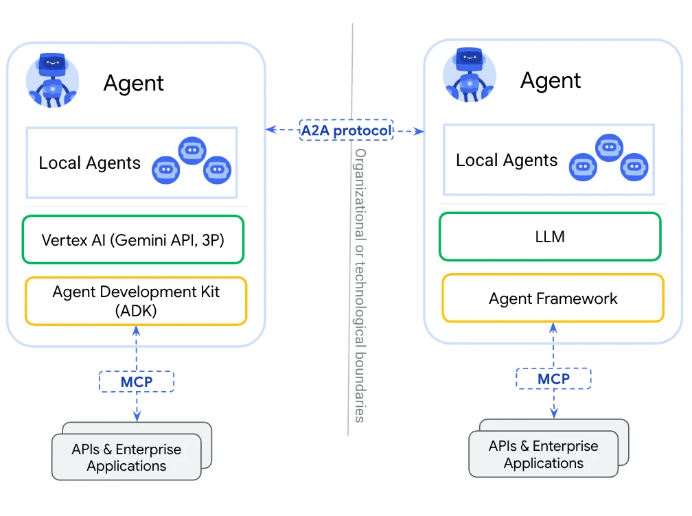
图 5-1 RSP 四层参考架构
层概述
RSP 从上到下定义了四个概念层：
- 代理层
- 技能编排层
- 技能运行层
- 机器人/模拟器层
每层都有一个明确的责任和一个窄接口到相邻层。
5.3 代理层
责任
这代理层负责：
- 任务理解和目标推理
- 规划与决策
- 选择和排序技巧
- 处理突发事件和恢复
代理商纯粹从事语义空间，而不是物理空间。
主要特点
- 与机器人无关
- 独立于硬件
- 技能感知，而非控制器感知
代理可以使用以下方式实现：
- 大型语言模型 (LLM)
- 视觉-语言-行动 (VLA) 模型
- 象征性规划者
- 混合架构
RSP故意放置没有限制关于内部代理设计，只要代理：
调用机器人行为完全通过技能。
5.4 技能编排层
责任
这技能编排层连接高层意图和具体执行。它负责：
- 技能发现与匹配
- 能力兼容性检查
- 技能构成和链接
- 重试、回退和替换逻辑
该层可以实现为：
- 独立服务
- 代理运行时的一部分
- 平台级组件
为什么编排是一个单独的层
将编排与代理分离可以：
- 跨代理重用编排逻辑
- 集中政策执行
- 跨部署的一致行为
它还可以防止代理嵌入脆弱的执行假设。
5.5 技能运行层
责任
这技能运行层是可信执行边界的RSP。
它负责：
- 执行技巧
- 执行约束和政策
- 监控执行状态
- 收集遥测数据
所有的物理动作都必须经过这一层。
运行时作为安全边界
运行时确保：
- 前提条件已验证
- 不变量不断被强制执行
- 违规导致确定性终止
这种设计确保即使不正确或幻觉的代理计划也不能直接导致不安全行为。
5.6 机器人/模拟器层
责任
底层包含实际的机器人控制堆栈，包括：
- ROS2节点
- MoveIt运动规划
- Nav2导航
- 英伟达艾萨克
- 供应商特定控制器
RSP 确实不是更换这些系统。
相反，它定义了一个干净的界面在他们上面，允许：
- 遗留系统可重用
- 新机器人将逐步加入
5.7 Agent*技能交互流程
 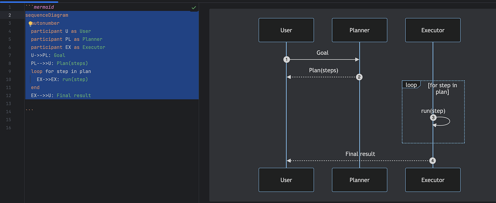
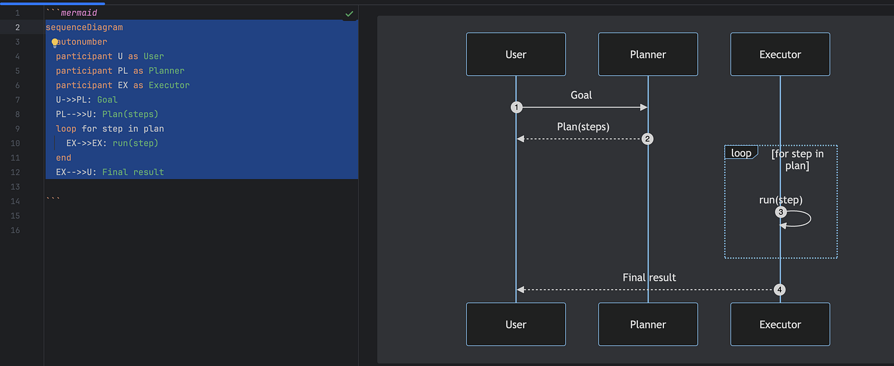
图 5-2特工*技能交互流程
分步流程
- 意图形成代理确定目标（例如，“选择对象 A”）。
- 技能发现编排层查询可用技能。
- 能力匹配根据机器人的能力概况筛选候选技能。
- 技能调用代理通过 Skill.call 调用选定的技能。
- 运行时执行技能运行时验证前提条件并强制执行约束。
- 执行与监控机器人在持续的监督下执行。
- 结果报告结构化结果和遥测数据返回给代理。
5.8 部署模式
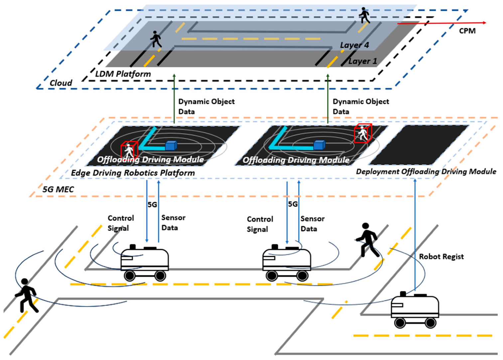
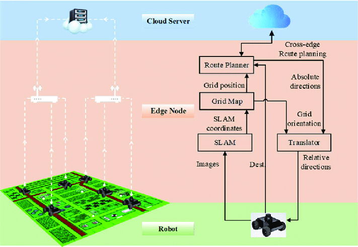
图 5-3典型的 RSP 部署模式
RSP 支持多种部署拓扑：
机器人执行
- 技能运行时直接在机器人控制器上运行
- 低延迟、高确定性
边缘编排执行
- 边缘的编排和策略
- 接近硬件执行的技能
云辅助执行
- 云端技能存储、验证、分析
- 云中没有实时控制循环
这种灵活性对于工业和监管环境至关重要。
5.9 与现有框架的关系
RSP 和 ROS2
- ROS2 仍然是通信支柱
- RSP 运营高于活性氧，而不是代替它
退休储蓄计划和移动它/ 导航2
- 运动规划仍然是技能的内在内容
- RSP 标准化了这些功能的公开方式
RSP 和模拟（Isaac、Gazebo）
- 模拟是一流的验证环境
- 部署前可以验证技能
5.10 为什么这个架构可以扩展
RSP 架构可扩展的原因是：
- 代理水平扩展（新的推理模型）
- 技能垂直扩展（更好的实现）
- 运行时强制不变量（安全与信任）
- 商店支持生态系统（分配与激励）
每一层都独立发展，不会破坏其他层。
第 6 章 — 机器人技能生命周期
机器人技能协议（RSP）v0.3
6.1 为什么技能生命周期是必要的
在传统的机器人项目中，软件工件被视为项目可交付成果:
- 代码是为特定机器人编写的
- 集成一次
- 非正式维护（如果有的话）
这种方法从根本上限制了可扩展性。 如果技能要成为一流资产，它们必须像现代软件产品一样对待——具有清晰、明确的生命周期。
机器人技能协议 (RSP) v0.3 定义了标准化技能生命周期它决定了技能如何：
- 已创建
- 分布式
- 执行
- 已评估
- 进化了
- 退休
这个生命周期是一个协议级概念，而不仅仅是一个发展指南。
6.2 技能生命周期概述
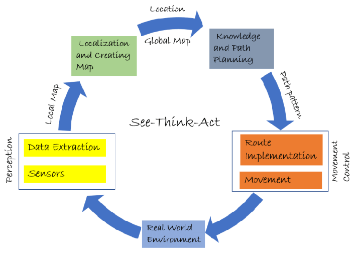
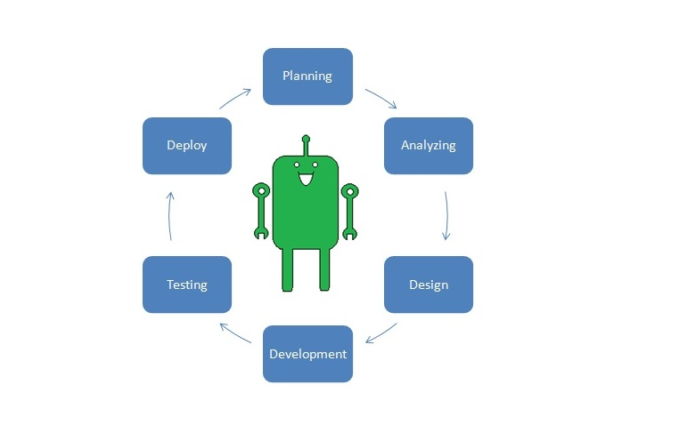
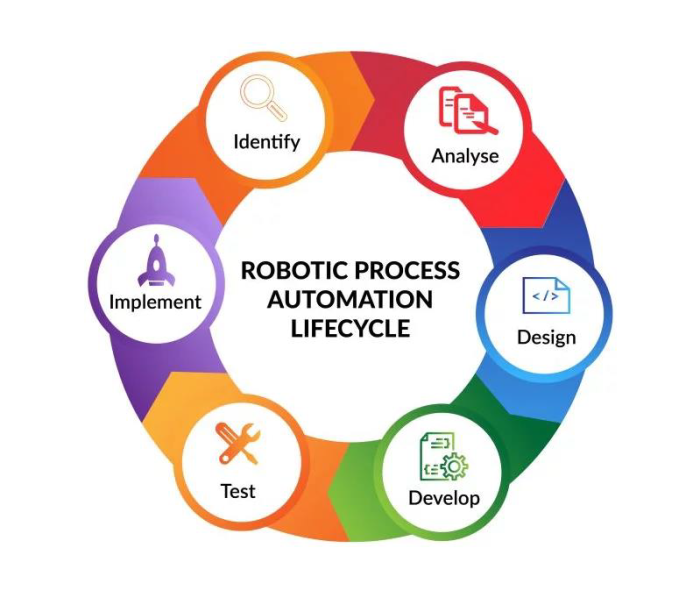
图 6-1机器人技能生命周期
RSP 生命周期被有意设计为闭环，反映持续改进而不是一次性交付。
主要阶段是：
- 创作
- 登记
- 发现与匹配
- 祈求
- 执行与监控
- 评估和版本控制
- 弃用和退役
6.3 技能创作
目的
技能创作是开发人员创建符合 RSP 的新机器人功能的过程。
主要活动
在创作过程中，开发人员：
- 实现技能逻辑（感知、计划、控制）
- 定义技能清单
- 指定前提条件、约束和不变量
- 选择执行模式（同步/异步/流式传输）
重要的是，创作确实不是要求：
- 特定代理的知识
- 了解下游应用
这种解耦允许在多个上下文中重用技能。
6.4 技能注册（技能登记）
目的
注册使人成为一种技能可见且可用RSP 生态系统内。
注册工件
注册技能通常包括：
- 技能体现
- 运行时端点
- 版本标识符
- 验证和测试工件
注册并不意味着信任或生产准备就绪。 它只建立存在性和可达性。
6.5 技能发现与匹配
目的
发现使代理或平台能够识别给定任务的合适技能。
匹配标准
技能匹配基于：
- 所需能力
- 输入/输出兼容性
- 声明的限制
- 信任和认证级别
这个过程可能是：
- 自动化（代理驱动）
- 辅助（人机交互）
- 政策约束（企业规则）
发现是一个决策点，不是静态查找。
6.6 技能调用（技能召唤）
目的
调用代表从意图到执行的转变。
调用语义
通过以下方式调用技能：
- 结构化输入
- 执行方式
- 政策背景（安全、资源限制、信任）
调用总是由技能运行时，从不直接由代理人。
这保证了：
- 前提条件已验证
- 强制执行约束
- 执行是可观察的
6.7 技能执行和监控
目的
执行是抽象能力转化为实际行动的阶段。
运行时职责
在执行期间，技能运行时：
- 不断强化不变量
- 监控系统和环境状态
- 收集日志、指标和跟踪
如果发生违规：
- 执行确定性终止
- 报告结构化错误
- 可能会触发恢复选项
这个阶段的可观察性是强制性的和标准化的。
6.8 技能评估
目的
评估确定技能是否按预期执行：
- 机器人
- 环境
- 任务
评估信号
评估可考虑：
- 成功/失败率
- 绩效指标
- 安全事故
- 操作员反馈
评估对于以下方面至关重要：
- 建立信任
- 技能排名
- 持续改进
6.9 技能版本控制
为什么版本控制很重要
技能发展：
- 错误已修复
- 性能提高
- 能力扩展
如果没有明确的版本控制，重用就会变得不安全。
版本控制原则
RSP 鼓励：
- 语义版本控制
- 向后兼容性声明
- 明确的弃用通知
代理商和平台可以知情的选择决定。
6.10 技能弃用和退役
目的
并非所有技能都应该永远存在。
弃用允许：
- 发出不应再使用某项技能的信号
- 提供迁移路径
退役可以使技能不再被积极使用，而不会破坏依赖系统。
安全退休
一项技能只有在以下情况下才可能完全退役：
- 不存在活动依赖项
- 更换策略可用
- 政策允许移除
这可以防止生态系统碎片化。
6.11 生命周期作为生态系统的推动者
通过规范技能生命周期，RSP 能够：
- 独立开发者发布技能
- 企业加强治理
- 代理人要推理信任和成熟度
- 支持市场的平台
生命周期将技能从工程制品进入经济单位。
第 7 章 — 技能接口规范
机器人技能协议（RSP）v0.3
7.1 技能接口的目的和范围
技能界面是最关键的合同由机器人技能协议定义。
它指定代理如何与技能交互， 没有：
- 了解如何实施该技能
- 知道什么机器人执行它
- 绕过安全或政策限制
该接口必须同时满足：
- 机器可读性（用于代理和工具）
- 人类可解释性（针对开发商和运营商）
- 协议稳定性（用于生态系统扩展）
RSP v0.3 特意定义了接口语义和行为的等级，而不是在传输或中间件级别。
7.2 技能界面设计原则
技能界面遵循以下原则：
- 声明式优于过程式接口描述什么一项技能可以，但不能如何。
- 显式契约前提条件、约束和输出必须明确。
- 与传输无关REST、gRPC、DDS 或其他传输都是实现选择。
- 安全第一每个界面元素都必须在运行时可执行。
- 代理合理代理必须能够推理成功、失败和替代方案。
7.3 作为规范接口的技能清单
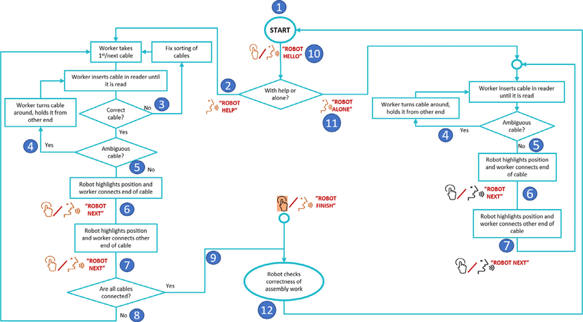
图 7-1作为规范接口的技能清单
清单的作用
在 RSP 中，技能清单是规范接口定义。
其他一切（SDK、API、运行时适配器）均源自它。
该清单能够：
- 技能发现
- 能力匹配
- 安全执法
- 版本控制和治理
7.4 清单结构概述
典型的技能清单包含以下部分：
1. 身份和元数据
- 技能名称
- 语义版本
- 作者/组织
- 领域分类
2、能力要求
- 所需的机器人能力
- 传感器依赖性
- 运行时依赖
3. 接口定义
- 输入模式
- 输出模式
- 执行模式
4. 合约定义
- 前提条件
- 后置条件
- 不变量
5. 约束和限制
- 运动约束
- 力/扭矩限制
- 工作空间限制
6. 信任与验证
- 模拟覆盖范围
- 验证工件
- 认证级别（可选）
这个结构是故意的平坦而明确，避免隐含的假设。
7.5 输入和输出模式
结构化输入
输入是使用结构化模式定义的：
- 显式类型
- 单位和坐标系
- 必填字段与可选字段
输入概念示例：
- 目标姿势
- 对象标识符
- 公差参数
这使得：
- 静态验证
- 自动工装
- 跨技能的可组合性
结构化输出
输出描述：
- 执行结果
- 结果数据
- 诊断信息
输出必须是：
- 确定性
- 机器可读
- 适合Agent级别的推理
7.6 前提条件
前提条件定义在技能开始之前必须满足什么条件。
示例：
- 机器人静止
- 夹具是空的
- 目标物体姿态置信度≥阈值
前提条件有两个目的：
- 早期拒绝无效计划
- 代理推理关于可行性
他们被检查前执行开始。
7.7 约束和不变量
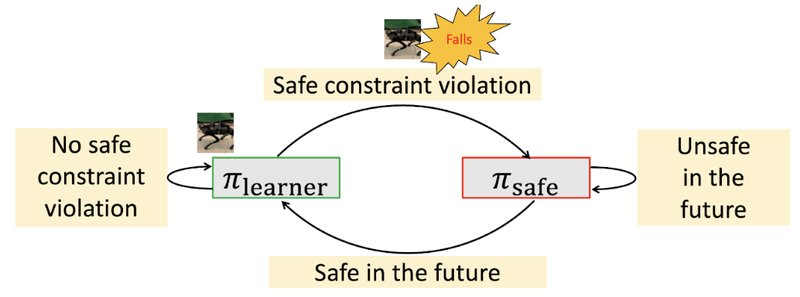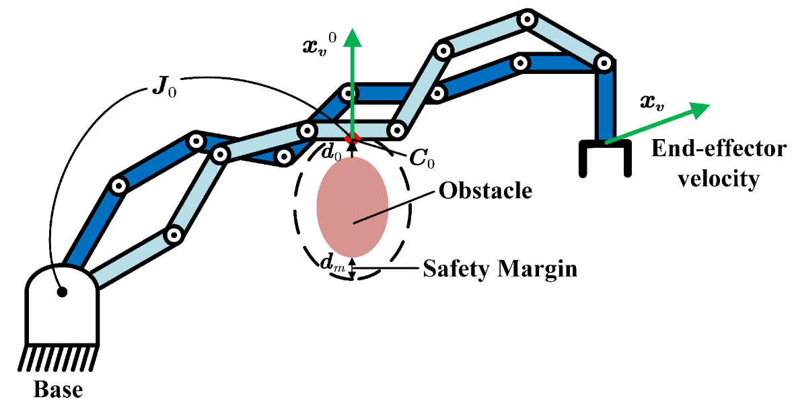
图 7-2运行时强制的约束和不变量
约束条件
约束定义允许的操作范围:
- 速度限制
- 力限制
- 工作区边界
不变量
不变量定义必须具备的条件时刻保持:
- 禁止进入禁区
- 没有违反安全阈值
强制执行约束和不变量通过技能运行时间连续，不是由代理人。
7.8 执行语义
RSP 定义了三种标准执行语义：
同步执行
- 阻止呼叫
- 完成或失败时返回
- 适合短期、确定性的操作
异步执行
- 非阻塞
- 返回一个用于监控的句柄
- 适合长时间运行的任务
流式执行
- 连续输入/输出
- 适合感知驱动或适应性技能
代理明确选择执行模式；运行时一致地强制执行语义。
7.9 错误模型和故障语义
RSP 标准化错误类别以实现稳健的编排：
- 前提条件违反
- 约束违规
- 执行失败
- 外部中断
- 暂停
错误是：
- 显式的
- 打字的
- 可观察的
这使代理商能够：
- 重试
- 倒退
- 重新规划
无需依赖脆弱的启发式方法。
7.10 可观测性和遥测钩子
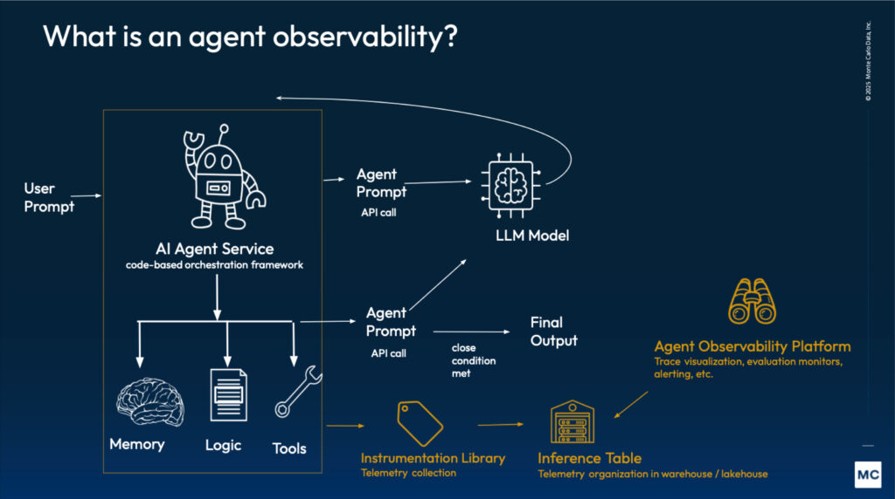
图 7-3技能可观测性和遥测
每个技能执行都会暴露标准化的可观察性挂钩：
- 日志（事件、警告、错误）
- 指标（延迟、成功率）
- 痕迹（执行时间线）
可观察性是强制的在 RSP v0.3 中。
无法观察到的技能是不可信任的。
7.11 为什么接口故意是严格的
RSP 故意拒绝：
- 隐性行为
- 未声明的副作用
- 隐藏的假设
这种严格性允许：
- 跨机器人复用
- 安全的代理自主权
- 市场级信任
较宽松的接口可能在本地很方便，但无法扩展。
第 8 章 — 安全与信任模型
机器人技能协议（RSP）v0.3
8.1 为什么安全必须成为协议原语
随着机器人通过代理系统和基础模型获得自主权，安全性不再被视为应用程序级别的问题或尽力而为的实施细节。
传统方法通常假设：
- 代理商将制定“合理”计划
- 开发商将正确实施安全检查
- 出现问题时运营商会介入
这些假设在规模上并不成立。
机器人技能协议 (RSP) v0.3 建立在一个更强大的前提之上：
安全性必须嵌入到协议本身中，而不是委托给代理或开发人员。
这意味着必须保证安全无论代理智能、实施质量或部署环境如何。
8.2 威胁模型和故障模式
为了设计稳健的安全模型，RSP 明确考虑了现实的故障模式：
- 代理错误幻觉的计划、无效的假设或不完整的背景。
- 技能实施错误软件缺陷、数值不稳定或边缘情况故障。
- 环境的不确定性传感器噪音、遮挡、意外障碍物。
- 积分漂移技能可在机器人或非设计环境中重复使用。
即使在以下情况下，安全模型也必须保持有效：多种故障模式同时发生。
8.3 深度安全架构
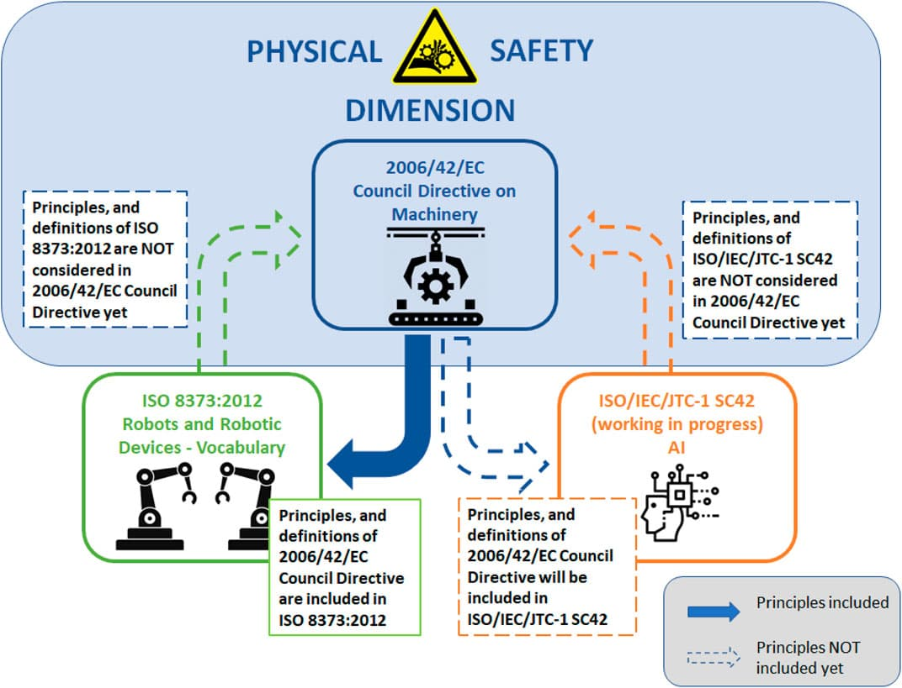图 8-1 RSP 中的深度安全架构
RSP 采用防御- 深入方法，具有多层独立的安全机制：
- 技能清单中的声明性安全
- 能力限制的技能选择
- 运行时安全防护
- 政策执行和治理
- 人在环升级
每一层都被设计为安全且独立地发生故障。
8.4 技能清单中的声明安全性
第一道安全屏障是声明式和明确式。
每个技能清单定义：
- 前提条件（执行前必须满足的条件）
- 限制（允许的操作范围）
- 不变量（必须始终成立的条件）
因为这些是机器可读，它们可以是：
- 静态验证
- 动态强制
- 执行后审核
这将安全性从隐式代码逻辑转移到显式契约。
8.5 能力限制执行
RSP 的核心安全原则是：
技能只能在能力概况完全满足技能声明要求的机器人上执行。
这可以防止不安全的重复使用，例如：
- 在轻型机器人上运行高力操纵技能
- 在没有足够传感能力的情况下执行精确任务
进行能力匹配执行前并且不可被代理覆盖。
8.6 运行时安全防护
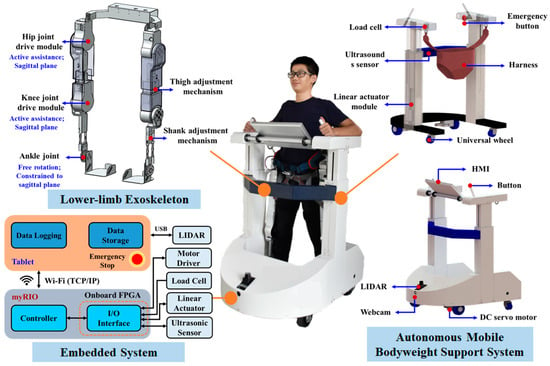
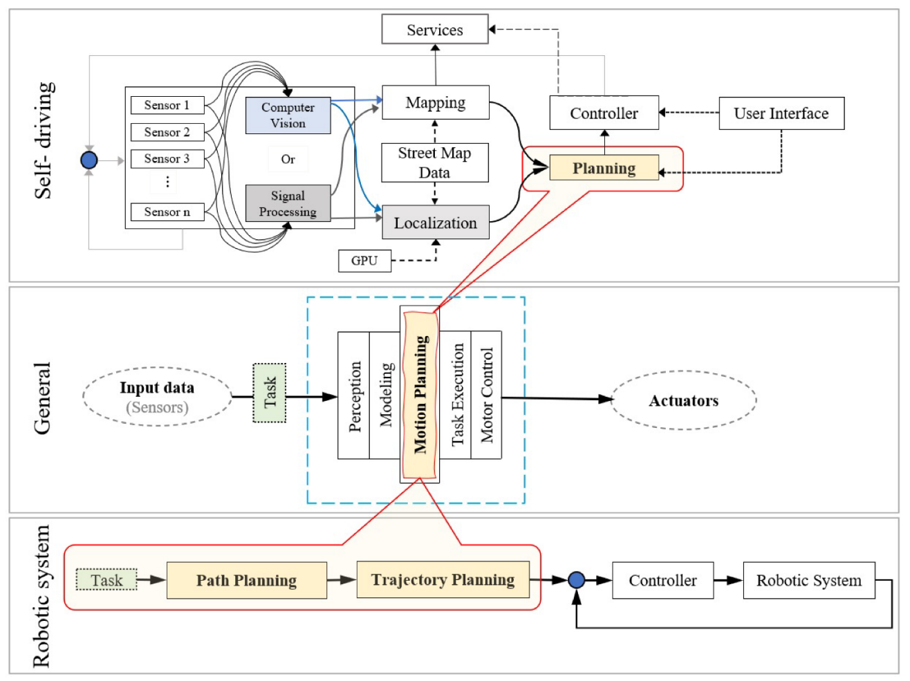
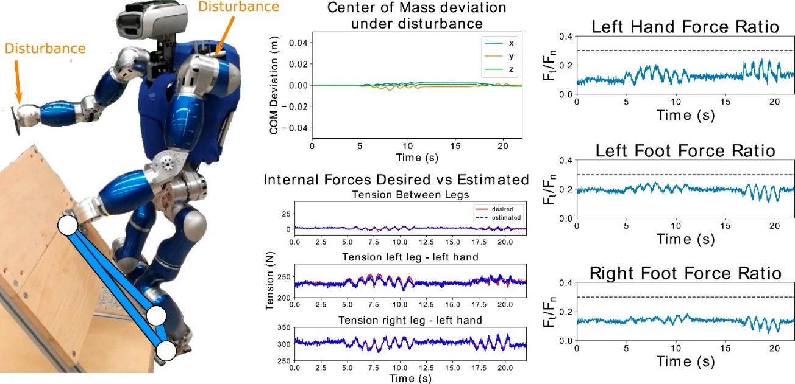
图 8-2运行时安全防护和不变性执行
这技能运行时作为最终也是最关键的安全边界。
运行时职责
在执行期间，运行时不断强制执行：
- 运动限制（速度、加速度）
- 力和扭矩阈值
- 工作空间和区域限制
- 资源使用限制
如果违反任何不变量：
- 执行立即终止
- 机器人进入安全状态
- 发出结构化安全事件
此次强制执行是不可协商的和独立于代理的。
8.7 基于政策的安全和治理
除了个人技能之外，组织还需要系统级安全治理。
RSP 支持政策执行，例如：
- 只有经过认证的技能才能在生产中运行
- 某些技能需要人类的批准
- 执行仅限于特定时间窗口或地点
政策执行情况：
- 技能注册时
- 在发现和选择时
- 在调用时
这使得跨车队和站点的安全态势保持一致。
8.8 仿真优先的安全验证
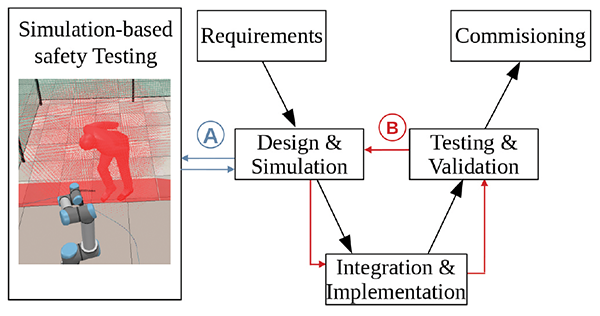
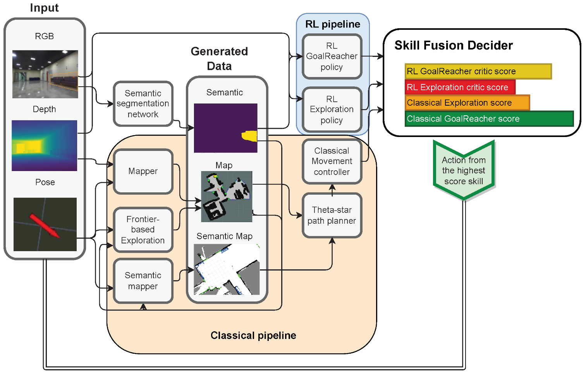
图 8-3仿真优先的安全验证流程
RSP 强烈鼓励模拟优先方法：
- 创作和检测技能
- 在模拟环境中进行测试
- 评估边缘情况和故障场景
- 生成的验证工件
- 技能提升为生产资格
模拟不会取代现实世界的测试，但它可以显着降低风险并增加覆盖范围。
8.9 认证就绪的信任工件
为了支持工业和监管部署，RSP 允许附加技能信任工件， 包括：
- 测试覆盖率报告
- 安全分析
- 合规文档
- 第三方认证结果
这些工件是：
- 版本控制
- 可审计
- 可通过政策强制执行
这使得 RSP 与现有的安全和合规工作流程兼容。
8.10 人在环升级
自治并不消除责任。
当不确定性超过可接受的阈值时：
- 技能执行可能会暂停
- 控制权可能会升级给人类操作员
- 决策被记录并可追踪
人机循环机制提供了控制安全阀不会陷入完全远程操作。
8.11 信托作为一种新兴财产
在 RSP 中，信任不是二元的。
它产生于：
- 多次成功执行
- 透明的可观测性
- 独立验证
- 明确的责任
通过标准化信任信号的生成和使用方式，RSP 使代理和组织能够明智的、有风险意识的决策。
8.12 为什么这个安全模型可以扩展
RSP 的安全模型具有可扩展性，因为它：
- 协议级，不是应用程序级别的
- 声明式，不是启发式的
- 运行时强制，不依赖于代理
这允许部署越来越强大的代理在不成比例增加风险的情况下。
第 9 章 — 代理编排模型
机器人技能协议（RSP）v0.3
9.1 从技能调用到编排
调用单个技能非常简单。 但在现实世界中操作强大的机器人系统却并非如此。
实际部署必须处理：
- 部分可观察性
- 不确定性结果
- 硬件可变性
- 环境变化
代理编排是将个人技能转化为连贯、有弹性行为。 RSP v0.3 明确定义了该层 - 不是作为整体规划器，而是作为协议兼容模式安全地进行创作技巧。
9.2 编排层的职责
编排层位于代理推理和技能执行力。其职责包括：
- 技能选择与替换
- 测序和组成
- 条件分支
- 重试、回退和恢复
- 策略和信任感知执行
至关重要的是，编排是以技能为中心，不以控制器为中心。 所有决定都以技能及其合同的形式表达。
9.3 单代理编排
在最简单的情况下，单个代理为一个机器人协调技能。
典型工作流程
- 解释任务意图
- 分解为技能级别步骤
- 选择兼容的技能
- 政策约束下发挥技能
- 监控结果并适应
该模型已经实现：
- 动态重新规划
- 技能替代
- 优雅降级
9.4 多代理编排
RSP 不将编排限制为单个代理。
多个代理人可以：
- 就共同目标进行协调
- 控制不同的机器人
- 专注于规划、感知或监督

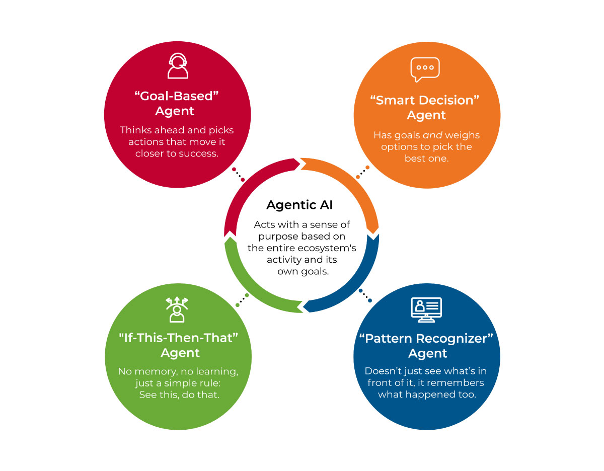
图 9-1多智能体技能编排
关键思想
- 代理商在以下地点进行沟通意图和技能水平，不通过低电平信号
- 技能仍然是唯一的执行边界
这可以实现可扩展的协调，而无需纠缠控制逻辑。
9.5 技能构成和链接
技能被设计为可按合同组合。
复合行为是由链接技能形成的，其中：
- 技能A的后置条件满足技能B的先决条件
- 约束在整个链上是兼容的


图 9-2作为有向图的技能构成
组成表示为有向无环图 (DAG):
- 节点：技能
- 边缘：依赖和控制流
这种表示允许：
- 静态验证
- 部分执行
- 局部恢复
9.6 条件执行和分支
现实世界的执行需要条件逻辑：
- 如果未检测到物体→重试感知技能
- 如果抓取失败 → 切换抓取器或策略
- 如果路径受阻 → 重新规划导航
RSP 支持基于以下条件的条件分支：
- 结构化输出
- 错误类型
- 遥测信号
条件已评估外部技能，保持封装。
9.7 回退、重试和恢复
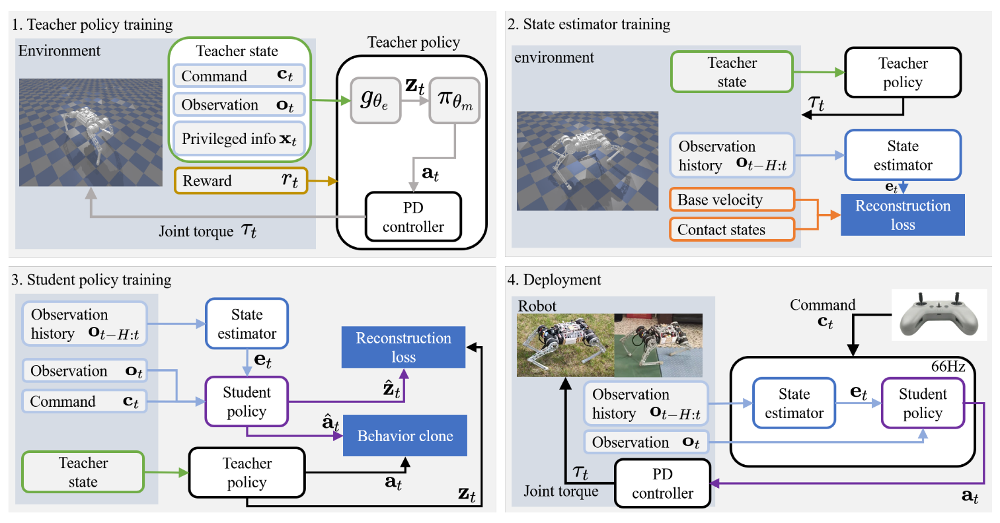
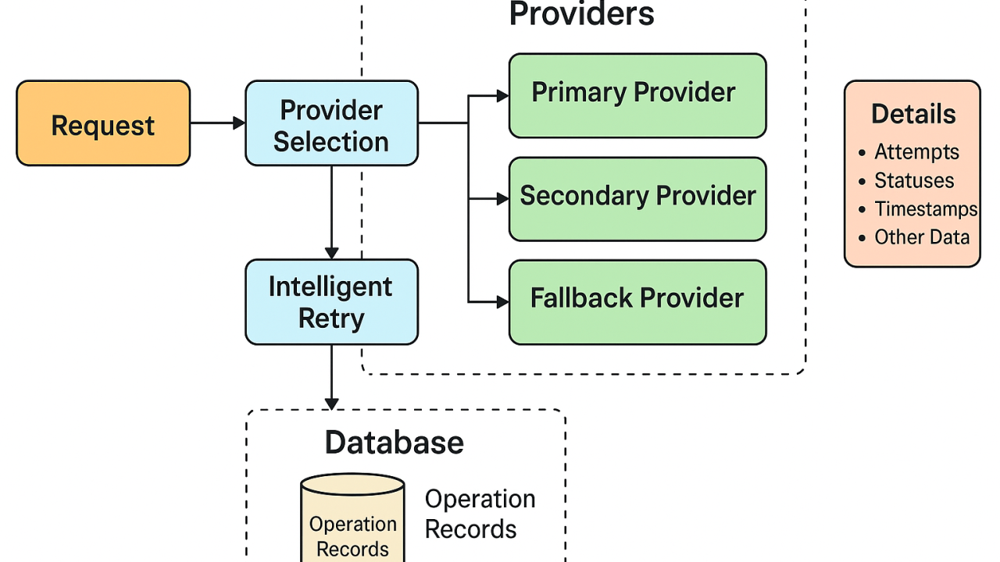
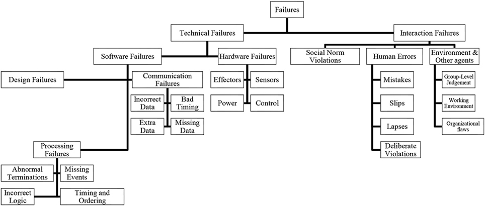
图 9-3技能编排中的回退和恢复
当技能失败时，编排逻辑可能：
- 重试相同技能
- 替代替代技能
- 调用恢复技能
- 重新计划任务
因为失败是类型化和显式（第 7 章），恢复是系统性的而不是启发式的。
9.8 上下文和世界模型注入
技能有意被最小化。 代理可以在调用时注入额外的上下文，例如：
- 世界状态摘要
- 感知结果
- 任务级约束
这允许：
- 保持可重用的技能
- 代理商利用更丰富的世界模型
- 明确的国家所有权和推理
上下文注入是显式的且可审计的。
9.9 与世界模型的交互
RSP 没有定义世界模型。 然而，它定义了世界模型如何与技能相互作用:
- 世界模型为智能体决策提供信息
- 代理选择和参数化技能
- 技能在声明的约束内执行
这种分离可以防止世界模型假设泄漏到执行逻辑中。
9.10 与LLMs、VLA 和策略模型的集成
现代智能体系统越来越依赖：
- 推理和规划LLMs
- 感知到行动的 VLA 模型
- 经典的控制策略
RSP 为以上模型和策略提供了稳定的执行边界。
无论情报来源如何：
- 技能的调用方式相同
- 以同样的方式加强安全
- 保留可观测性
这使得生态系统能够适应未来的模型快速演化。
9.11 编排不是控制
一个常见的误解是将编排视为控制逻辑的替代品。
RSP 划出了一条严格的界限：
- 控制生活在技能之中
- 编排生活高于技能
这种分离允许：
- 高度自治
- 低级决定论
- 清晰的安全界限
9.12 为什么代理编排可以扩展
RSP 编排模型可扩展，因为它：
- 契约驱动
- 故障感知
- 策略执行
- 与智能体无关
它可以在不牺牲可预测性或安全性的情况下实现日益自主的行为。
第 10 章 — 机器人技能商店和市场
机器人技能协议（RSP）v0.3
10.1 为什么技能库很重要
协议本身并不能创造生态系统。
历史一再表明，大规模技术采用需要：
- 标准化接口
- 分配机制
- 对贡献者的激励
在当今的机器人技术中，即使存在可重用的功能，也存在没有系统的方法来发现、评估、信任和部署它们跨组织和机器人平台。
这机器人技能商店解决了这个缺失的层。
它将机器人技能从内部工程制品转变为可发现、可分配且经济上可行的资产。
10.2 技能库在 RSP 生态系统中的作用
技能商店不仅仅是应用程序商店的克隆。 它是一个协议感知平台与 RSP 语义紧密耦合。
其核心角色包括：
- 技能注册和索引
- 元数据驱动的发现
- 信任和验证信号
- 许可和访问控制
- 分发和生命周期管理
至关重要的是，技能商店可以不是执行技能。 执行仍然是技能运行时的责任。
10.3 高级技能库架构
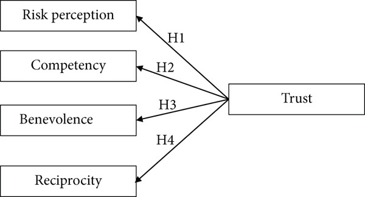
图 10-1机器人技能库架构
关键部件
- 技能登记处存储清单、版本和元数据。
- 索引和搜索引擎支持按功能、域、约束和信任级别进行发现。
- 信任和验证层聚合验证工件、测试覆盖率和使用信号。
- 许可和策略引擎控制访问、定价和企业策略。
- 分布层提供技能包和运行时更新。
这种架构确保商店仍然存在与机器人硬件和执行细节无关，同时深入了解协议语义。
10.4 技能元数据和发现
元数据作为一流资产
在 RSP 中，元数据不是辅助的，而是核心。
每个技能的索引如下：
- 宣称的能力
- 输入/输出架构
- 约束和不变量
- 支持的执行模式
- 信任和认证级别
这允许双方人类和代理人智能查询店铺。
代理人发现
代理可能会发出以下查询：
“找到与 Robot X 兼容、经过生产认证、能够搬运重达 2 公斤物体的操控技能。”
发现因此成为合理的选择过程，不是关键字搜索。
10.5 信任、评级和验证信号
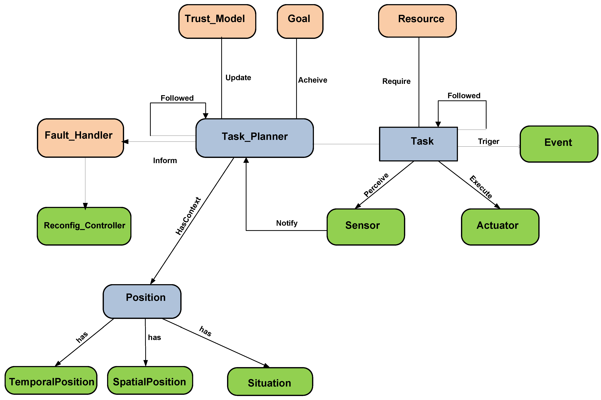
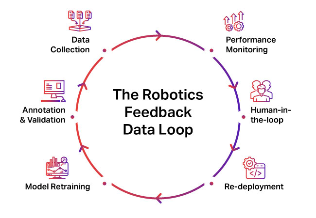
图 10-2。技能库中的信任和验证信号
对技能库的信任是多维且基于证据的。
信号可能包括：
- 模拟和测试覆盖率
- 跨机器人的部署历史
- 安全事故记录
- 操作员反馈
- 第三方认证
重要的是，信任是：
- 透明的（文物是可检查的）
- 版本特定
- 政策可执行
这使得具有风险意识的大规模采用成为可能。
10.6 许可和定价模型
技能商店支持多种经济模式，包括：
- 开源技能社区驱动的创新和参考实施。
- 商业技能基于订阅、按使用或按部署的许可。
- 企业专用技能组织内的私人分发。
RSP 并不强制要求采用商业模式——它使共存单一生态系统内的多个模型。
10.7 公共技能库与企业技能库
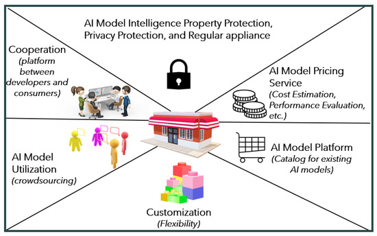
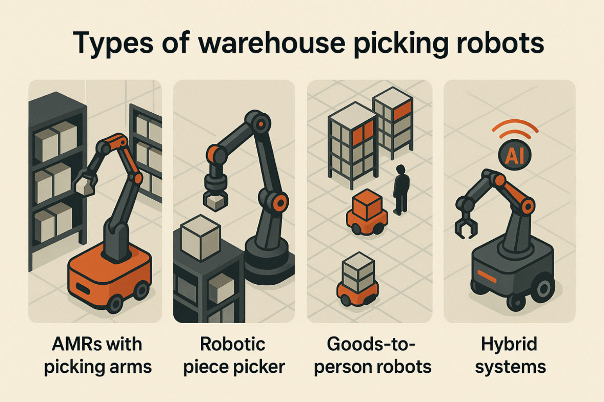
图 10-3公共和企业技能库模型
公共技能商店
- 开放的生态系统
- 广泛的开发者参与
- 市场动态
企业技能商店
- 受控访问
- 内部治理和合规性
- 与 IT 和安全系统集成
混合模型
- 精心策划的外部技能
- 内部验证和政策执行
这种灵活性对于工业和监管部署至关重要。
10.8 技能分配和更新管理
技能随着时间的推移而发展。
技能商店管理：
- 版本化发行版
- 兼容性元数据
- 更新通知
- 回滚机制
这可以防止：
- 无声的突破性改变
- 不安全的自动升级
- 跨部署的碎片化
技能更新变成管理运营，而不是临时重新部署。
10.9 经济和网络效应
技能商店可实现强大的网络效应：
- 更多技能→更强大的机器人
- 更多机器人→更多使用数据
- 更多数据→更好的技能
这种反馈循环的好处是：
- 开发人员（重用和货币化）
- 企业（整合成本较低）
- OEM（差异化能力生态系统）
结果是正和生态系统，不是一个零和整合市场。
10.10 为什么这不仅仅是“一个应用程序商店”
与传统应用商店不同：
- 技能对安全至关重要
- 执行是物理的且受到限制的
- 信任必须是可验证的，而不是假设的
RSP 的技能商店集成协议语义、安全性和生命周期管理在某种程度上，通用市场无法做到这一点。
10.11 战略意义
机器人技能商店将行业从以下方面转变：
- 基于项目的交付 → 基于能力的消费
它创造了条件：
- 独立机器人技能开发者
- 垂直专业技能供应商
- 跨OEM能力复用
这是一个基础机器人技能经济。
第 11 章 — 参考实现
机器人技能协议（RSP）v0.3
11.1 为什么参考实现很重要
参考实现表明 RSP 是可部署的，非理论的。他们跨域、机器人和执行环境验证协议。
11.2 跨域验证
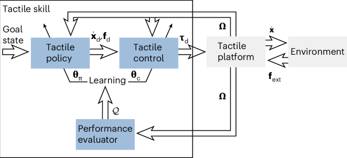
图 11-1 RSP 的跨域验证
RSP 已在以下方面得到验证：
- 工业操纵
- 手机导航
- 检查和AOI
- 仅模拟管道
在这些领域中，代理*技能边界和安全执行保持一致。
11.3 机器人之间的技能重用
图 11-2相同的技能，不同的机器人
只要满足能力要求，单个技能清单就可以在具有不同低级实现的多个机器人之间重复使用。
11.4 实施的主要见解
在所有参考实现中：
- 技能重用极大地减少了集成工作
- 安全限制仍然有效
- 代理逻辑与机器人无关
这些结果证实了该协议的核心假设。
第 12 章 — 开发者体验 (DX)
机器人技能协议（RSP）v0.3
12.1 为什么开发者体验很重要
没有任何协议能够仅在架构上取得成功。
整个软件生态系统的历史显示出一致的模式：
- 技术上优越的系统因 DX 不佳而失败
- 更简单、工具完善的系统赢得采用和关注
机器人技术也不例外。 如果构建符合 RSP 的技能比编写一次性 ROS 节点要困难得多，那么开发人员将绕过该协议，从而破坏生态系统的发展。
因此，RSP v0.3 对待将开发者体验作为一流的设计目标，不是事后的想法。
12.2 RSP 开发者体验的设计目标
RSP 开发人员体验以四个目标为指导：
- 进入门槛低开发人员应该能够在数小时而不是数周内培养基本技能。
- 快速反馈循环错误、约束违规和性能问题必须尽早发现。
- 仿真优先工作流程开发人员应该在不需要物理机器人的情况下验证技能。
- 从第一天开始就是生产级的技能应该很容易从原型升级到生产。
这些目标塑造了整个 RSP 工具生态系统。
12.3 技能SDK
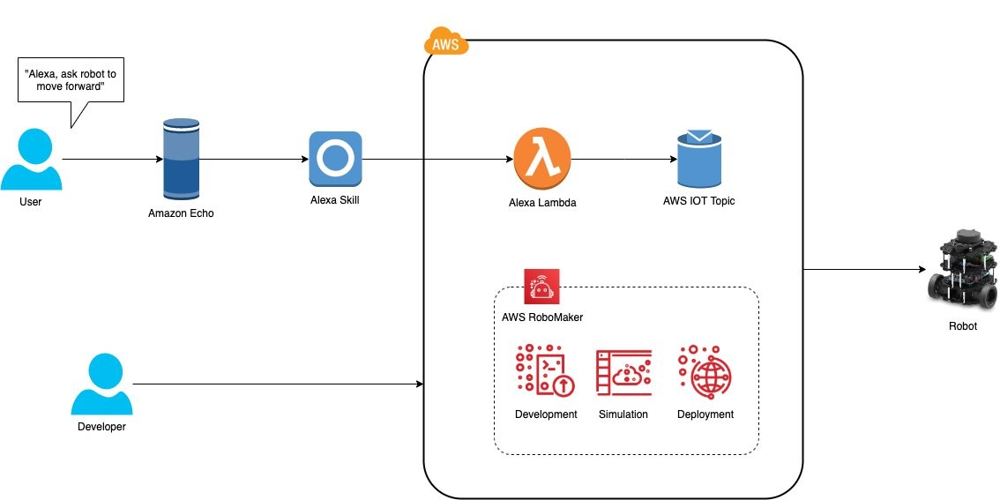
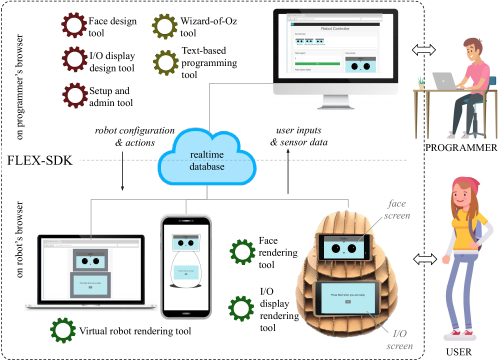
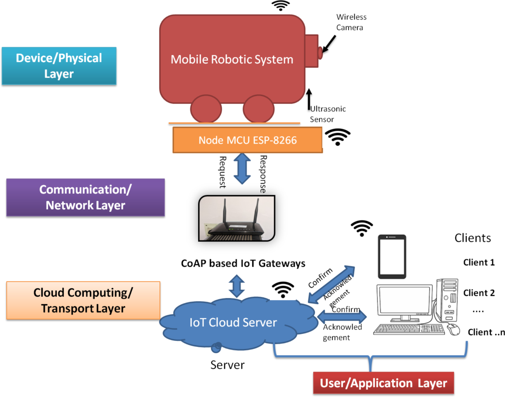
图 12-1技能SDK架构
SDK 的目的
Skill SDK为开发者提供：
- 清单模板和验证器
- 强类型输入/输出绑定
- 本地运行时适配器
- 可观察性挂钩
SDK 原则上与语言无关，通常在以下位置提供参考实现：
- Python
- C++
SDK理念
SDK 做了不是隐藏 RSP 概念。 相反，它让他们明确且符合人体工程学。
开发人员直接与以下人员合作：
- 舱单
- 合约
- 执行语义
这可以避免破坏可移植性或信任的“神奇行为”。
12.4 本地开发工作流程

图 12-2本地技能发展工作流程
典型的本地工作流程包括：
- 作者技能逻辑实施感知、规划或控制逻辑。
- 定义清单指定接口、约束和所需的功能。
- 本地运行时执行针对本地或模拟运行时运行技能。
- 立即验证及早检测合同违规、架构错误或安全问题。
这种紧密的循环极大地减少了集成摩擦。
12.5 仿真优先开发
模拟是一个默认，不是可选步骤。
与 RSP 兼容的工作流程自然地集成：
- 英伟达艾萨克
- 凉亭
- 定制数字孪生
开发人员可以：
- 跨场景测试技能
- 注入噪声和边缘情况
- 验证安全不变量
这种方法：
- 减少硬件依赖性
- 提高测试覆盖率
- 加快迭代速度
12.6 持续集成和验证
图 12-3机器人技能的 CI 管道
RSP 鼓励将技能视为生产软件工件。
典型的 CI 步骤包括：
- 清单架构验证
- 静态合约检查
- 基于模拟的测试
- 性能回归检测
CI 工件变成信任信号由技能商店和企业消耗。
12.7 发布到商店的技巧
发布技能是一流的运营。
发布流程包括：
- 版本标记
- 上传清单和工件
- 附上验证报告
- 声明许可和访问政策
出版并不意味着普遍可用；访问权限受商店和企业策略的约束。
12.8 调试和分析技巧
可观察性是 DX 的核心。
RSP 提供标准化遥测：
- 执行时间表
- 资源使用情况
- 约束执行事件
开发人员可以：
- 重现故障
- 比较不同机器人的性能
- 在不违反合同的情况下进行优化
调试重点行为的正确性，而不仅仅是代码的正确性。
12.9 技能的升级和维护
随着技能的发展：
- 新版本已发布
- 明确声明兼容性
- 明确表示弃用
开发人员不会被迫进行重大更改，运营商保留对升级时间的控制权。
12.10 支持独立和企业开发者
RSP 的 DX 模型同时支持：
- 独立开发人员构建可重用技能
- 企业团队发展内部能力
这种包容性对于健康的生态系统至关重要。
12.11 为什么 RSP 的 DX 能够促进生态系统的增长
RSP 的开发者体验之所以成功，是因为：
- 与现代软件实践保持一致
- 尊重机器人安全现实
- 使重用默认路径
当开发者获得授权时，生态系统就会随之而来。
第 13 章 — 比较与定位
机器人技能协议（RSP）v0.3
13.1 为什么需要定位
RSP 经常被误解为 ROS、行为树或端到端学习系统的替代品。清晰的定位可以避免混乱并设定正确的期望。
13.2 抽象级别比较
图 13-1抽象级别与重用
RSP 在比 ROS 原语或行为树更高的语义级别上运行，专注于功能契约和生命周期而不是控制流。
13.3 RSP 在机器人堆栈中的位置
图 13-2 RSP 在机器人堆栈中的位置
RSP 位于：
- 低级机器人控制堆栈
- 高级代理推理系统
它定义了唯一安全规范的执行边界。
13.4 战略定位总结
RSP 最好理解为：
能力合同、安全执行和生态系统扩展的协议。
它是对现有工具的补充，而不是与它们竞争。
第 14 章 — 业务和生态系统影响
机器人技能协议（RSP）v0.3
14.1 从项目经济学到平台经济学
如今大多数机器人企业都在项目经济学:
- 收入与系统集成项目挂钩
- 利润取决于定制工作
- 知识不会跨部署复合
该模型无法扩展。
机器人技能协议实现了结构转型平台经济， 在哪里：
- 功能可在客户之间重复使用
- 通过分配实现价值复合
- 边际部署成本接近于零
这种转变反映了云计算、移动平台和人工智能工具生态系统中的转变。
14.2 机器人价值链转变
图 14-1 RSP 推动价值链转移
传统机器人价值链
- 五金制造
- 系统集成
- 项目交付
- 维护合同
RSP 支持的价值链
- 硬件平台
- 技能发展
- 技能分布
- 能力消耗
通过将技能与硬件和项目解耦，RSP 引入了新的价值创造层以前不存在的。
14.3 RSP 生态系统中的新角色
RSP 可实现更丰富、更专业的生态系统：
技能开发者
- 独立或企业开发者
- 专注于特定领域的能力
- 无需拥有硬件即可将专业知识货币化
平台运营商
- 运营技能库和编排基础设施
- 策划、认证和管理生态系统
机器人原始设备制造商
- 通过能力生态系统而不是专有 API 实现差异化
- 减轻客户的集成负担
系统集成商
- 从低级编码转向更高价值的解决方案设计
- 从经过验证的技能中组装解决方案
这种专业化提高了生态系统的整体效率。
14.4 降低进入和创新壁垒
通过标准化接口和执行语义，RSP 降低了以下障碍：
- 中小企业
- 学术副产品
- 独立开发商
创新不再需要：
- 完整的机器人堆栈
- 深度集成专业知识
- 前期资金投入大
相反，贡献者可以专注于狭窄的高价值能力。
14.5 网络效应和数据飞轮
图 14-2 机器人技能生态系统中的网络效应
RSP 可实现正反馈循环：
- 更多技能→更强大的机器人
- 更多部署→更多性能数据
- 更多数据 → 更好的技能和信任信号
这个飞轮使所有参与者受益并加速生态系统的成熟。
14.6 RSP 支持的经济模型
RSP 支持多种共存的业务模型：
- 基于使用的定价按调用或执行时间付费。
- 订阅模式持续获得不断发展的功能。
- 企业许可私人技能分配和治理。
- 开核型号具有商业延伸的社区基地。
该协议不限制货币化——它使实验和市场发现。
14.7 降低企业风险
对于企业采用者来说，RSP 降低了主要风险：
- 供应商锁定技能可以跨合规平台移植。
- 整合风险技能经过预先验证并受合同约束。
- 安全与合规风险信任工件和策略是明确的。
这降低了机器人大规模采用的门槛。
14.8 对机器人原始设备制造商的战略意义
RSP 为 OEM 提供了一个战略选择：
- 在专有堆栈上竞争
- 或者在生态系统支持方面展开竞争
采用 RSP 的 OEM 可以：
- 吸引第三方创新
- 降低客户整合成本
- 加快实现能力的时间
这与其他行业从封闭平台向开放生态系统的转变是平行的。
14.9 对投资者和市场的影响
从投资角度来看，支持 RSP 的公司：
- 比基于项目的集成商扩展得更快
- 建立防御平台和生态系统
- 捕捉长期网络效应
这重新定义了机器人技术中如何创造和获取价值。
14.10 从机器人产品到机器人基础设施
最终，RSP 将机器人技术从：
- 提供定制产品 → 前往建筑物共享基础设施
基础设施级平台：
- 超越个人应用程序
- 赋能整个市场
- 吸引开发商持续投资
RSP将机器人技能层定位为这样的基础设施。
14.11 为什么业务协调对于协议采用很重要
技术的优雅并不能保证被采用。
RSP 明确设计用于对齐：
- 技术激励
- 经济激励
- 组织激励
当这些协调一致时，生态系统就会自然增长。
第 15 章 — 路线图和未来方向
机器人技能协议（RSP）v0.3
15.1 为什么路线图对于协议很重要
协议不是静态的工件。 它是一个随着时间的推移而演变的社会和技术契约。
如果没有明确的路线图：
- 早期采用者担心锁定
- 贡献者缺乏方向
- 生态系统碎片
因此，RSP 定义了一个明确的进化路径，平衡：
- 采用者的稳定性
- 开发商的创新
- 安全和信任治理
15.2 RSP进化的设计原则
RSP 路线图遵循四个原则：
- 默认向后兼容现有的技能和代理必须继续发挥作用。
- 增量形式化从实际出发，逐步强化保障。
- 生态系统驱动的优先事项真实的部署决定了协议的演进。
- 供应商中立的治理没有任何一家公司可以控制协议的方向。
15.3 RSP 版本路线图概述
图 15-1 RSP 协议路线图
15.4 RSP v0.3 — 基础（当前）
主要焦点
- 代理*技能抽象
- 技能清单和合同
- 安全设计运行时模型
- 技能生命周期和商店概念
v0.3 支持什么
- 安全的代理驱动执行
- 跨机器人技能复用
- 早期市场实验
v0.3 有意优先考虑清晰度和可实施性超过形式的完整性。
15.5 RSP v0.4 — 验证和基准测试
主要方向
- 标准化技能基准测试
- 正式的模拟测试套件
- 可比较的性能指标
影响
- 客观技能比较
- 更强的信任信号
- 更容易企业采用
这一阶段强化信心，而不仅仅是能力。
15.6 RSP v0.5 — 互操作性和认证
主要方向
- 跨供应商互操作性配置文件
- 安全关键技能的认证框架
- 合规性调整（工业和监管领域）
影响
- 减少集成摩擦
- 增加 OEM 参与
- 监管就绪部署
该版本标志着 RSP 从符合工业级标准的实验协议。
15.7 RSP v1.0 - 主技能生态系统
长期愿景
- 自主技能发现
- 自动化技能学习和改进
- 跨车队的闭环数据飞轮
特征
- 代理可以推理未知技能
- 技能可以自我报告表现和信心
- 生态系统层面的优化出现
v1.0代表全面实现机器人技能经济。
15.8 治理和标准化路径
RSP 旨在根据以下条件发展：
- 开放规格
- 透明的决策过程
- 社区和行业参与
潜在的治理模式包括：
- 开放联盟
- 基金会支持的管理
- 多方利益相关者技术委员会
治理对于维持信任和中立至关重要。
15.9 风险和缓解措施
风险：过早过度标准化 →减轻：增量形式化
风险：碎片化的实现 →减轻：参考实现和一致性测试
风险：具有自主性的安全回归 →减轻：协议级安全不变量
15.10 为什么路线图是现实的
该路线图符合：
- 当前的行业轨迹
- 代理人工智能成熟度曲线
- 模拟和数字孪生的采用
它雄心勃勃，但以可部署的步骤为基础。
第16章—结论
机器人技能协议（RSP）v0.3
16.1 重新审视核心问题
机器人技术长期以来一直受到以下问题的困扰：
- 软件碎片化
- 集成成本高
- 有限的重复使用
尽管硬件和人工智能取得了进步，能力不会复合。
这不是人才或技术的失败。 这是缺乏共享抽象。
16.2 RSP v0.3 建立了什么
机器人技能协议 v0.3 建立：
- 技能是一流的便携式资产
- Agent*Skill作为安全自治边界
- 声明式合同和生命周期管理
- 安全和信任作为协议原语
这些共同构成了最小可行基础用于可扩展的机器人软件。
16.3 为什么代理*技能是正确的界限
图 16-1智能体*技能愿景
通过分离：
- 推理（智能体）
- 执行（技能）
RSP使AI智能快速进步不成比例增加身体风险。
这个边界是安全、可扩展自治的关键。
16.4 From Robots to Infrastructure（从机器人到基础设施）
RSP 重新定义了机器人技术的发展方向：
- 从交付机器 → 转向构建共享基础设施
这种基础设施级抽象具备以下特征：
- 使能生态系统的形成与扩展
- 吸引长期投资
- 超越单一应用的生命周期
RSP 将机器人技能层定位为这样的基础设施。
16.5 Call to the Ecosystem（致生态系统的呼吁）
RSP 的成功并不依赖于某一个组织。
它依赖于：
- 开发者持续构建和贡献技能
- OEM 厂商开放并支持能力层
- 企业对可移植性与可信性的真实需求
- 研究人员贡献新的抽象与理论基础
RSP 是一份面向机器人未来的协作邀请函。